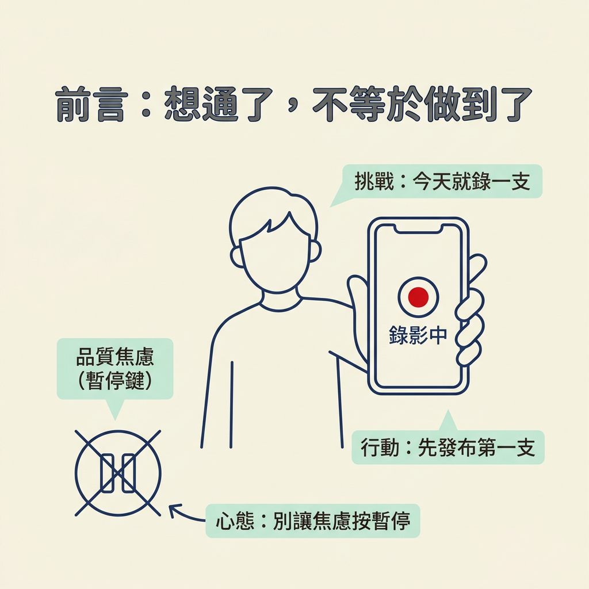
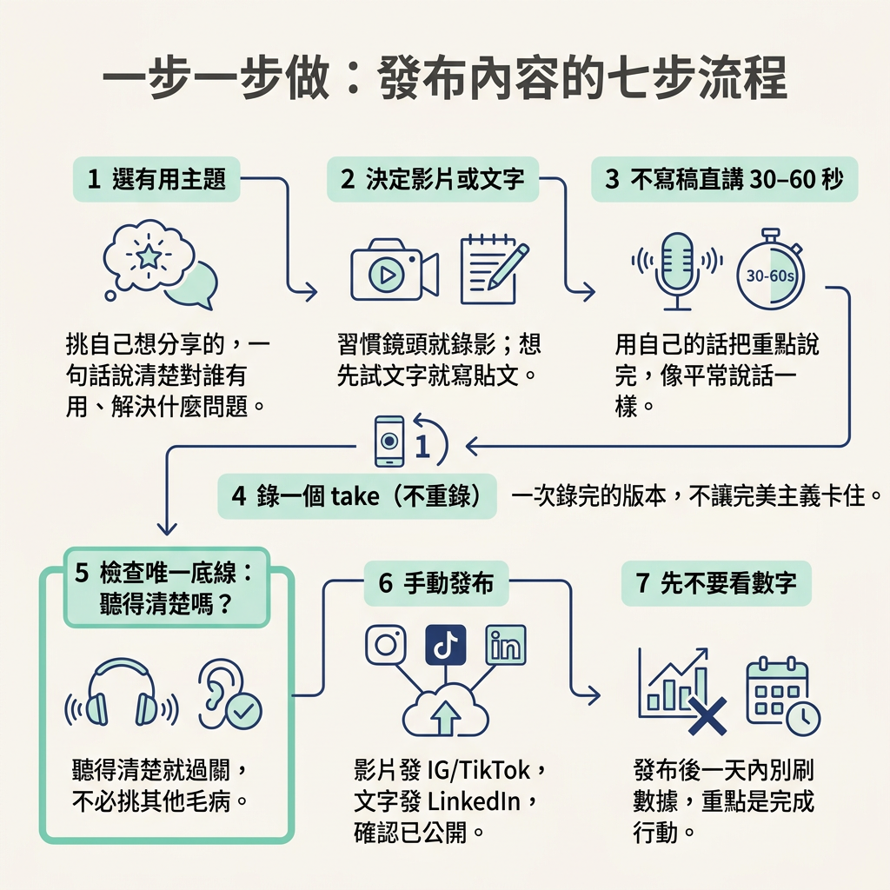

今天就錄一支你自己覺得有用的短片，發到 Instagram 或 TikTok；如果想先用文字，也可以把貼文發到 LinkedIn。這一步的重點不是做出完美作品，而是讓第一篇內容真正上線。
前面五節，我們重新想過品質是什麼：它不是開始創作前必須跨過的門檻，而且隨著規模變大，對品質的要求也會提高。品質的核心是內容有用、別人聽得清楚。至於要不要露臉，則由你決定。
現在來到這個流程的最後一步：把前面想過的事，變成一篇真的發布出去的內容。你需要一支手機、一個自己真心覺得有用的主題，以及大約 10 到 20 分鐘。做完後，你會在帳號上看到一支已發布的影片，或一篇文字貼文，而不只是草稿匣裡又多一個念頭。
講師在 Module 9 結尾給的挑戰很簡單：今天就錄一支。先別讓品質焦慮替你按下暫停鍵。

選一個你自己覺得有用的主題。不要猜觀眾喜歡什麼，挑一個你會想分享給朋友的內容。選好後，試著用一句話說清楚：這對誰有用？能解決什麼問題？
決定要做影片還是文字。如果你還不習慣面對鏡頭，或想先從文字開始，就寫文字貼文；如果你已經能自在地說明想法，就錄影片。依照講師的建議，想先試文字可以發到 LinkedIn；準備好錄影的話，就發到 Instagram 和 TikTok。
不寫講稿，直接講 30 到 60 秒。用自己的話把重點說一遍，不必要求每個字都完美。你要看到的結果是：能把想說的內容講完，而且聽起來像你自己，不像在念稿。
用手機錄一個 take，不要重錄。「一個 take」就是一次錄完的版本。畫面普通沒關係，先確認播得出你的聲音。刻意不重錄，是為了別讓完美主義把你卡在原地。
檢查唯一底線：播放一次，聽得清楚嗎？聽得清楚就過關，不必接著挑其他毛病。如果真的聽不清楚，靠近手機一點，或換到安靜的房間再錄一次，不需要先去買麥克風。
手動發布。影片發到 Instagram 和 TikTok；文字貼文發到 LinkedIn。完成後，確認內容已經公開在帳號上，不再只是相簿裡的一段影片或草稿。
先不要看數字。發布後至少一天，別一直回去刷讚數和觀看次數。這一步不是要驗證內容有沒有爆紅，而是讓你完成一次真正發布的行動，不再被「我還沒準備好」這個念頭牽著走。

發布後當然可以刪除，但如果一發出去就立刻收回，你也會失去這次「真的送出去」的經驗。盡量別一發布就後悔、馬上刪掉。讓內容留在那裡，作為你跨過門檻的證明。
你的帳號上多了一支貼文，而且是你自己覺得有用的內容。它不是終點，而是你一百篇裡的第 1 篇。至於為什麼要做到一百篇，以及每一篇可以怎麼改進，會在下一個節點「Rethinking Volume」討論；體量背後的原理，也留到那裡再談。
今天就錄一支，然後發出去。選一個你自己覺得有用的主題，用手機錄一個 take，確認聲音聽得清楚，再手動發到 Instagram 和 TikTok；如果選文字，就發到 LinkedIn。發布後先別刷數字。前面已經想過品質的門檻與定義，也決定了要不要露臉。現在只要完成一件事：讓第一篇內容上線。